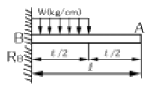
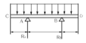
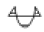
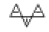
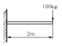

자동차차체수리기능사 (2006-01-22 기출문제)
1과목: 자동차공학
1. 자동차용 배터리의 충전방전에 관한 화학반응으로 틀린 것은?
- 배터리 방전시 (+)극판의 과산화납은 황산납으로 변한다.
- 배터리 충전시 (+)극판의 황산납은 점점 과산화납으로 변한다.
- 배터리 충전시 물은 묽은 황산으로 변한다.
- 배터리 충전시 (-)극판에는 산소가, (+)극판에는 수소를 발생시킨다.
(정답률: 68%)

2. NPN 파워트랜지스터에 접지되는 단자는?
- 이미터
- 베이스
- 접지가 필요 없다.
- 컬렉터
(정답률: 64%)
3. 디스크 브레이크를 드럼 브레이크와 비교한 특징으로 틀린 것은?
- 페이드 현상이 잘 일어나지 않는다.
- 구조가 간단하다.
- 브레이크의 편제동 현상이 적다.
- 자기작동 효과가 크다.
(정답률: 60%)
4. 자동차용 센서 중 압전소자를 이용하는 것은?
- 스로틀 포지션 센서
- 조향각 센서
- 맵 센서
- 차고센서
(정답률: 70%)
5. 4행정 6실린더 기관의 제 3번 실린더 흡기 및 배기 밸브가 모두 열려 있을 경우 크랭크축을 회전방향으로 120° 회전시켰다면 압축 상사점에 가장 가까운 상태에 있는 실린더는? (단, 점화순서는 1-5-3-6-2-4)
- 1번 실린더
- 2번 실린더
- 4번 실린더
- 6번 실린더
(정답률: 44%)
6. 공기 청정기(건식)의 흐름 효율저하를 방지하려면 정기적으로 엘리먼트를 빼내어 어떻게 하는 가?
- 물걸레로 닦아낸다.
- 물속에 넣어 세척한다.
- 경유에 세척한다.
- 압축공기로 먼지 등을 불어낸다.
(정답률: 94%)
7. 전자제어 엔진의 연료분사 방식에 들지 않는 것은?
- 동시분사
- 그룹분사
- 순간분사
- 독립분사
(정답률: 66%)
8. 전류에 대한 설명으로 틀린 것은?
- 자유전자의 흐름이다.
- 단위는 A를 사용한다.
- 직류와 교류가 있다.
- 저항에 항상 비례한다.
(정답률: 83%)
9. 회전수 3000rpm, 100PS 기관의 토크는 약 몇 kgf-cm인가?
- 2387
- 2525
- 2637
- 2780
(정답률: 38%)
10. 디젤기관의 연소에 영향을 미치는 중요 요소와 가장 관계가 적은 것은?
- 분사시기
- 연료의 인화점
- 분무의 상태
- 공기의 유동
(정답률: 47%)
11. 어떤 자동차로 마찰계수 0.3인 도로에서 제동했을 때 제동 초속도가 10m/s라면 약 몇 m 나가서 정지하겠는가?
- 12m
- 15m
- 16m
- 17m
(정답률: 35%)
12. 크랭크 케이스의 환기에 대한 설명으로 가장 거리가 먼 것은?
- 오일의 열화를 방지한다.
- 대기오염을 방지한다.
- 자연식과 강제식 환기 장치가 있다.
- 송풍기로 환기시킨다.
(정답률: 68%)
13. 전자제어 현가장치 고장 진단시 액추에이터 시험 조건으로 맞는 것은?
- 점화 스위치 OFF
- 점화 스위치 ON
- 고장 경고등 점등
- 차속이 30km/h일 때
(정답률: 54%)
14. 차동장치에서 액슬축과 직접 접촉되어 있는 것은?
- 사이드 기어
- 웜 기어
- 피니언 기어
- 링 기어
(정답률: 49%)
15. 앞바퀴가 하중을 받았을 때 아래쪽이 벌어지는 것을 방지하기 위해 둔 각은?
- 캐스터
- 캠버
- 킹핀 경사각
- 토인
(정답률: 55%)
16. 냉형 점화플러그는 다음 중 어느 기관에 주로 사용하는가?
- 비교적 저속기관
- 고속 기관
- 저속 저부하 기관
- 중속 기관
(정답률: 63%)
17. 기관을 동력계에 의하여 출력을 측정하였더니 3000rpm에서 80마력이 발생하였다. 이 기관의 지시마력은?
- 48마력
- 50마력
- 82마력
- 75마력
(정답률: 45%)
18. 브레이크 슈의 리턴 스프링에 관한 설명이다. 가장 거리가 먼 것은?
- 브레이크 슈의 리턴 스프링이 약하면 휠 실린더 내의 잔압은 높아진다.
- 브레이크 슈의 리턴 스프링이 약하면 드럼을 과열시키는 원인이 될 수도 있다.
- 브레이크 슈의 리턴 스프링이 강하면 드럼과 라이닝의 접촉이 신속히 해제된다.
- 브레이크 슈의 리턴 스프링이 약하면 브레이크 슈의 마멸이 촉진될 수 있다.
(정답률: 59%)
19. 현재 통용되는 자동차 에어컨 시스템에서 컴퓨터가 감지하는 센서로 가장 거리가 먼 것은?
- 외기 온도 센서
- 스로틀 포지션 센서
- 일사 센서(SUN 센서)
- 냉각수온 센서
(정답률: 71%)
20. 전자제어 현가장치에 관한 설명 중 틀린 것은?
- 급제동시 노즈 다운 현상 방지
- 고속 주행시 차량의 높이를 낮추어 안정성 확보
- 제동시 휠의 로킹 현상을 방지하여 안정성 증대
- 주행조건에 따라 현가장치의 감쇠력 조절
(정답률: 52%)
2과목: 자동차차체정비
21. 다음 그림과 같은 외팔보에서 길이(ℓ)에 생기는 굽힘모멘트( Mmax )는 어느 것인가?

- Mmax = Wl2 / 2
- Mmax = Wl2 / 4
- Mmax = Wl2 / 8
- Mmax = Wl2 / 16
(정답률: 52%)
22. 프레임 챠트의 프레임 기준선으로부터 일정한 치수를 내어가지고 데이텀 라인 게이지의 수평코드 또는 수평 바에 치수를 옮기고 들여다보았을 때 앞뒤 네 곳에 일직선상에 있으면 어느 것이 정상인 것을 의미하는가?
- 프레임 각부의 길이가 정상
- 프레임 각부의 너비가 정상
- 프레임 각부의 높이가 정상
- 프레임 각부의 브래킷이 정상
(정답률: 57%)
23. 몸통 부분에 압축공기에 의해 작동하는 피스톤이 있어 끝에 설치된 작업 공구로 철판, 리벳 등을 거칠게 할 수 있는 동력 공구는?
- 에어 파워 치즐
- 커터
- 리벳건(saw)
- 파워 드릴
(정답률: 71%)
24. 모노코크 보디의 프레임 센터링 게이지 부착 방법이 아닌 것은?
- 안쪽에 거는 방법
- 바깥쪽에 거는 방법
- 바깥쪽 윗부분에 거는 방법
- 아래쪽 부착방법(마그네트 사용)
(정답률: 42%)
25. 다음은 판의 두께에 따른 용접이음의 적용도이다. 가장 적당한 것은? (단, 얇은 판 → 두꺼운 판)
- V형 이음 → I형 이음 → X형 이음 → U형 이음 → H형 이음
- V형 이음 → I형 이음 → U형 이음 → X형 이음 → H형 이음
- I형 이음 → V형 이음 → X형 이음 → U형 이음 → H형 이음
- I형 이음 → V형 이음 → U형 이음 → X형 이음 → H형 이음
(정답률: 64%)
26. 디스크 샌더의 사용 방법으로 틀린 것은?
- 필요 부분 전체를 연삭한다.
- 샌더는 움직이지 않게 잡는다.
- 샌더의 대는 각도는 적게 한다.
- 샌더 작업은 원형을 그리며 사용한다.
(정답률: 55%)
27. 다음 그림과 같은 굽힘 모멘트(B.M.D)를 옳게 그린 것은?



(정답률: 66%)
28. 트램 트랙킹 게이지로 네 바퀴의 정렬을 점검할 수 있는 종류에 옳지 않은 것은?
- 우측 프런트 서스펜션의 굽음
- 토인과 캠버의 변함
- 리어 액슬의 흔들림
- 옆으로 굽은 프레임의 앞 부위
(정답률: 78%)
29. 자동차 패널이 손상된 것을 먼저 육안으로 판단할 수 있는 요령은?
- 패널의 중심부를 게이지로 측정
- 패널부분의 페인트 벗겨짐 및 용접상태
- 패널부분의 형광물질 침투방법
- 패널부분의 폐유 침투방법
(정답률: 79%)
30. 그림과 같이 외팔보에 100kgf의 집중하중이 걸릴 때 최대 굽힘 모멘트는?

- 25kgfㆍm
- 50kgfㆍm
- 100kgfㆍm
- 200kgfㆍm
(정답률: 51%)
31. 기본적으로 도료를 구성하는 3가지 요소가 아닌것은?
- 수지
- 광택
- 안료
- 용제
(정답률: 81%)
32. 다음 중 전단 가공의 종류가 아닌 것은?
- 블랭킹
- 트리밍
- 세이빙
- 드로잉
(정답률: 66%)
33. 보(빔)에 걸리는 힘이 균형되어 정지하였을 때 보(빔)의 임의 단면에 걸리는 모멘트는 어떻게 되는가?
- 균형을 이룬다.
- 어느 한쪽으로 치우친다.
- 불균형을 이룬다.
- 긴 쪽으로 치우친다.
(정답률: 64%)
34. 철강재료 중에 탄소강은 탄소를 몇 % 정도 함유한 것인가?
- 0.035∼1.7
- 1.7∼6.67
- 1.7∼4.3
- 0.035 이하
(정답률: 74%)
35. 다음 중 전기저항 용접의 종류에 옳지 않은 것은?
- 스포트 용접
- 심용접
- 프로젝션 용접
- 라이트 용접
(정답률: 58%)
36. 컴퍼스를 이용하여 원을 그리는 방법에 대한 설명 중 올바르지 못한 것은?
- 연결대를 사용하여 큰 원을 그릴 때 컴퍼스 다리는 90°가 유지되도록 한다.
- 컴퍼스는 바늘 끝에 연필심 끝의 길이는 연필심 끝을 바늘 끝 보다 0.5mm 정도 길게한다.
- 원을 그리는 출발점은 원을 90°씩 4등분한 후 수평선 아래쪽 270° 지점에서 출발한다.
- 컴퍼스 바늘의 중심기로 바늘 끝을 중심에 올려 높이 사용하면 중심점의 구멍이 커지지 않는다.
(정답률: 53%)
37. 전기 용접할 때 발생 열량으로 알맞은 식은? (단, H(cal), I(A), R(Ω), t(sea))
- H = ( 0.24)2 IRt
- H = ( 0.24) I2 Rt
- H = ( 0.24) IR2 t
- H= ( 0.24) IRt2
(정답률: 66%)
38. 1회 고정으로 1방향 밖에 잡아당길 수 없으며, 다른 방향으로 동시에 잡아당기는 작업이 불가능한 프레임 수정기는?
- 이동식 프레임 수정기
- 고정식 랙형 프레임 수정기
- 바닥식 묻힘 베이스 프레임 수정기
- 바닥식 간이형 프레임 수정기
(정답률: 53%)
39. 프라이머 요구조건이 아닌 것은?
- 층간의 밀착성이 좋을 것.
- 내열성이 뛰어날 것.
- 침전물이 없을 것.
- 광택이 뛰어날 것.
(정답률: 84%)
40. 건조가 빠르고 작업성이 좋으며, 광택은 좋으나 황변 현상을 일으킬 때가 있는 도료는?
- 에나멜
- 아크릴
- 래커
- 우레탄
(정답률: 48%)
3과목: 안전관리
41. 알루미늄이 자동차 부품으로 사용되는 이유가 아닌 것은?
- 가볍다
- 열전달이 쉽다.
- 성형성이 좋다
- 용접성이 뛰어나다.
(정답률: 63%)
42. 사이드 보디를 구성하는 부품이 아닌 것은?
- 루프 레일
- 센터 필러
- 크로스 멤버
- 사이드 실
(정답률: 44%)
43. 용접봉 사용에 대하여 주의하여야 할 사항이 아닌 것은?
- 용접 목적과 사용조건을 감안하여 선택해야 한다.
- 용접봉의 플럭스는 건조한 장소에 보관하도록 주의해야 한다.
- 용접봉은 건조된 것을 사용하도록 한다.
- 용접봉은 용접할 금속에 관계없이 모두 사용할 수 있다.
(정답률: 93%)
44. 패널 교환을 할 때 변형 없이 빠른 시간에 정확한 절단을 하고자 한다. 제일 합당한 것은?
- 산소, 아세틸렌가스
- 핵소오(haksow)
- 에어컷
- 플라즈마 절단기
(정답률: 77%)
45. 합성수지의 공통적인 성질로 틀린 것은?
- 가볍고 튼튼하다.
- 가공성이 크고 성형이 간단하다.
- 전기 전도성이 좋으나 유기산류에 약하다.
- 투명한 것이 많으며, 착색이 자유롭다.
(정답률: 70%)
46. 구리 88%, 주석 10%, 아연 2%의 합금으로서 주조성, 기계적 성질, 내식성, 내마모성이 우수하여 기계부품의 중요 부분에 널리 사용되는 청동은?
- 포금
- 알루미늄 청동
- 인청동
- 니켈 청동
(정답률: 58%)
47. 치수 40mm를 축척으로 그릴 때 도면에 기입해야 할 치수는 얼마로 하는가?
- 10mm
- 20mm
- 40mm
- 80mm
(정답률: 63%)
48. 트럭의 프레임 수정에서 크로스 멤버와 사이드 멤버와의 결합부가 앞뒤로 굽은 것을 수정하는 작업은 어느 것인가?
- 상하로 굽은 프레임 수정 작업
- 좌우로 굽은 프레임 수정 작업
- 비틀린 프레임 수정 작업
- 이그러진 프레임 수정 작업
(정답률: 39%)
49. 금속재료를 열가공할 때의 불꽃 색깔과 온도를 표시한 것 중 틀린 것은?
- 적색 - 700℃
- 황색 - 900℃
- 담황색 - 1100℃
- 백색 - 1200℃
(정답률: 53%)
50. 모노코크 보디의 충격 흡수 부분으로 틀린 것은?
- 패널에 구멍을 낸다.
- 패널 두께를 변화시킨다.
- 패널을 급 각도로 변화시킨다.
- 패널에 보강대를 부착한다.
(정답률: 50%)
51. 정비공장에서 엔진을 이동시키는 방법 가운데 가장 옳은 것은?
- 사람이 들고 이동한다.
- 지렛대를 이용한다.
- 로프로 묶고 잡아당긴다.
- 체인 블록이나 호이스트를 사용한다.
(정답률: 90%)
52. 배터리의 전해액을 만들 때 반드시 해야 할 것은?
- 황산을 물에 부어야 한다.
- 물을 황산에 부어야 한다.
- 철제의 용기를 사용한다.
- 황산을 가열하여야 한다.
(정답률: 70%)
53. 산소용접 작업시 아세틸렌 용기에 관련된 주의사항 설명으로 올바른 것은?
- 가스의 누설 탐지를 위해 화학 재료를 사용하지 말 것.
- 내부 공기 침투를 방지하기 위해 적정 압력을 2kgf/cm2으로 유지시킬 것.
- 토치에 점화시에는 아세틸렌 밸브를 먼저 열고 점화 후 산소 밸브를 열 것.
- 용기의 보관 온도는 최소 60℃ 이하가 되도록 할 것.
(정답률: 71%)
54. 절삭기계 테이블의 T홈 위에 있는 칩 제거방법으로 가장 적합한 것은?
- 걸레
- 맨손
- 솔
- 장갑낀 손
(정답률: 86%)
55. 유류 화재시 소화방법으로 가장 적당하지 않는 것은?
- 분말 소화기를 사용한다.
- 다량의 물을 부어 끈다.
- 모래를 뿌린다.
- 가마니를 덮는다.
(정답률: 87%)
56. 연삭작업에서 숫돌차와 받침대 사이의 표준 간격은 얼마가 적당한가?
- 0∼1mm
- 2∼3mm
- 5∼7mm
- 8∼10mm
(정답률: 60%)
57. 스패너 사용에 관한 설명 중 가장 옳은 것은?
- 스패너와 너트 사이에 쐐기를 넣어 사용한다.
- 스패너는 너트보다 약간 큰 것을 사용한다.
- 스패너가 너트에서 벗겨지더라도 넘어지지 않도록 몸의 균형을 잡는다.
- 스패너 자루에 파이프 등을 끼워서 힘이 덜 들도록 사용한다.
(정답률: 73%)
58. 산업현장에서 안전을 확보하기 위해 인적문제와 물적문제에 대한 실태를 파악하여야 한다. 다음중 인적문제에 해당하는 것은?
- 기계 자체의 결함
- 안전교육의 결함
- 보호구의 결함
- 작업 환경의 결함
(정답률: 84%)
59. 타이어 및 튜브를 어떠한 곳에 보관하는 것이 가장 적합한가?
- 그늘진 창고에 보관한다.
- 밖에 쌓아 둔다.
- 오일, 그리스 및 석유가 있는 곳에 방치하여 둔다.
- 물이 있는 곳에 둔다.
(정답률: 89%)
60. 과열된 기관에 냉각수를 보충하려 한다. 다음 중 가장 적합한 방법은?
- 기관의 공전상태에서 잠시 후 캡을 열고 물을 보충한다.
- 기관을 가속시키면서 물을 보충한다.
- 자동차를 서행하면서 물을 보충한다.
- 기관 시동을 끄고 완전히 냉각시킨 후 물을 보충한다.
(정답률: 91%)